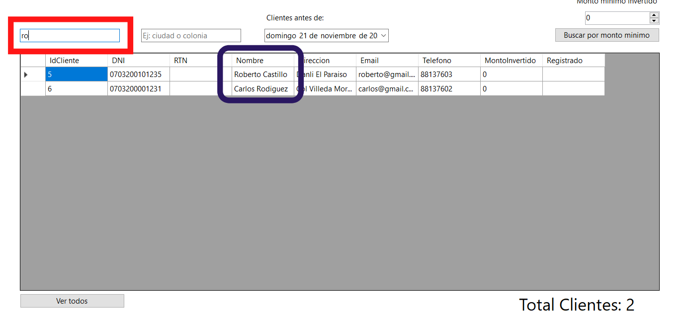
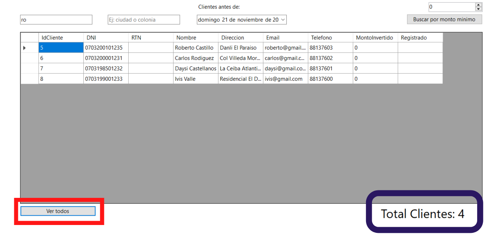
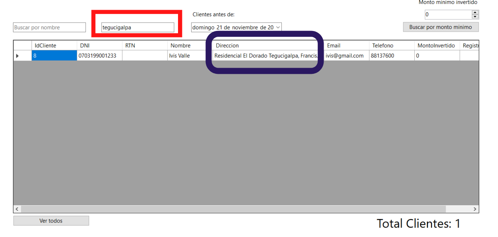
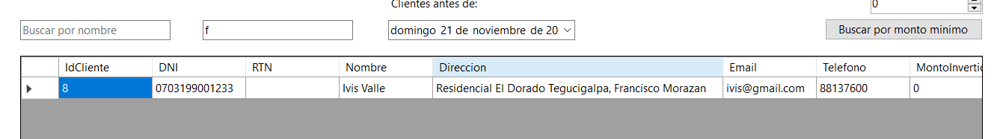
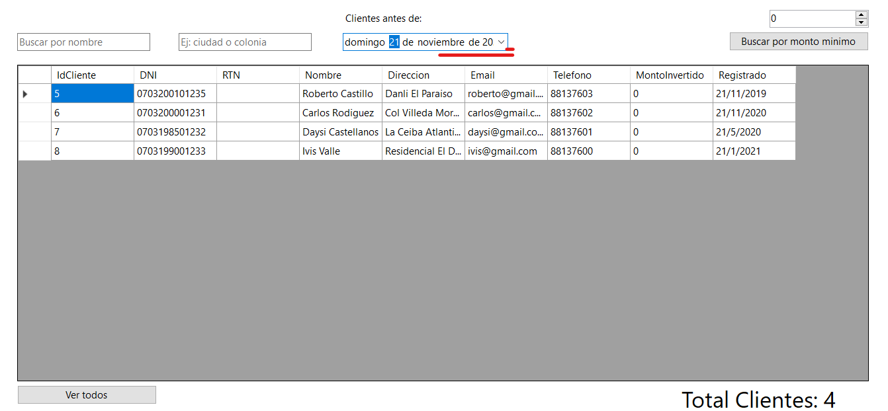
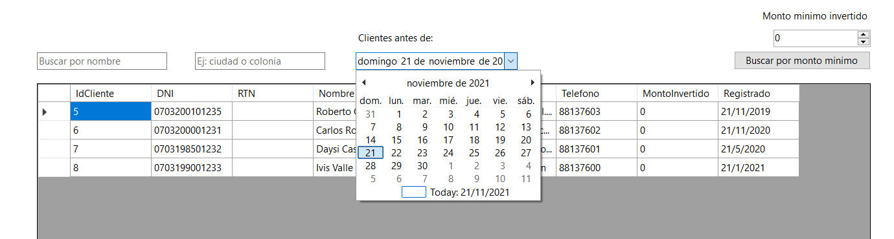
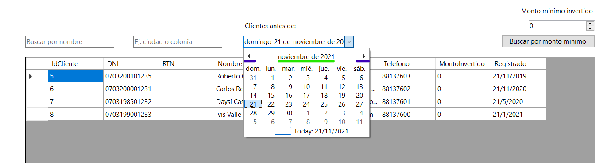

El proposito de esta pantalla es buscar clientes por diferentes parametros
Buscar por nombre u apellidos
Para buscar cleintes por nombre u apellidos solo debe ingresar el nombre del cliente en el primer cuadro de texto en la pantalla.
Como cargar todos los clientes de nuevo
Buscar Clientes por Direccion
Para cargar clientes por direccion puede insertar cualquier indicio de direccion ya sea la inicial de una ubicacion en concreto o el nombre de una ciudad.
En este ejemplo solo se inserta la inicial de Francisco Morazan y se muestra el resultado de los clientes que en su direccin contienen una f notese que la f podria traer resultados de muchas direcciones ejemplo: si la direccion fuera "Frente a local..."
No importa si ingresa mayusculas o minusculas los resultados van a coincidir siempre y cuando la direccion contenga en algun lugar la letra o palabras ingresadas
Buscar Clientes por fecha de Registro
- Primero debe hacer click en el icono de flecha(🔽) en la esquina del seleccionador de fecha  
-
A continuacion elija una fecha puede navegar entre años o meses
inicial mente puede navegar entre meses si hace click en uno de los iconos resaltados con color azul
para para a la navegacion por años haga click en la parte resaltada con color verde
